资料延伸 | 关于间谍文学和冷战时期的谍闻轶事
点击蓝字关注「忽左忽右」
🎧 点击上方图片
跳转到「JustPod」小程序收听本期节目
本期简介
简介：如果说伊恩·弗莱明的“007”系列描绘了一种带有浪漫主义的间谍风云，那么约翰·勒卡雷笔下勾勒的则是帝国衰败背景下，夹带冷峻现实和悲剧色彩的间谍故事。本期《忽左忽右》，专栏作家、学者沙青青与主播程衍樑一起线下做客陆家嘴读书会，与读者们分享作家勒卡雷的间谍文学，以及冷战时期间谍小说与现实社会的关系。本期话题成员： 程衍樑（微博@GrenadierGuard2）沙青青，上海图书馆历史文献中心副主任（豆瓣ID：BBpanda） 资料延伸旨在对节目中出现的重要人物、组织、事件、书籍以及影剧进行简单的介绍和总结，供听众和读者延伸阅读和拓展。0 1人物
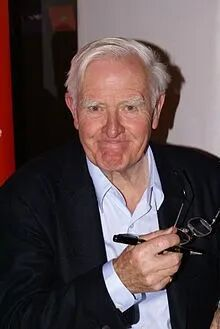
约翰·勒卡雷
（John le Carre，1931-）
约翰·勒卡雷原名戴维·康威尔（David Cornwell），1931年出生于英国普尔，20世纪最著名的间谍小说家，五六十年代他曾在英国军情五处（MI5）和军情六处（MI6）工作。1963年发表的间谍小说《冷战谍魂》（又译《柏林谍影》）是他的代表作，获得英国金匕首奖和美国埃德加·爱伦·坡奖。
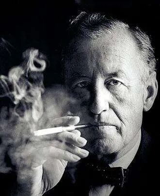
伊恩·弗莱明
（Ian Fleming，1908-1964）
伊恩·弗莱明生在伦敦，父亲瓦伦丁·弗莱明是英国国会议员。他曾经于1939年在MI6担任勤务，第二次世界大战期间在英国安全协调局担任间谍。他战后居住于牙买加，将其宅邸命名为“黄金眼”（Goldeneye）以纪念自己在二战期间参与的一次秘密行动。1952年8月16日正式以海军少校军衔结束英国皇家海军后备队的服役生涯。1953年以自己的间谍经验为基础创作了第一本詹姆斯·邦德小说《皇家赌场》，之后每年出版一部系列作品。1964年因心脏病去世，留下遗作《金枪客》。
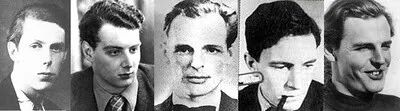
剑桥五杰
（Cambridge Five)
剑桥五杰是指苏联自第二次世界大战在英国安排的五名双重间谍（另有一说是只四人）。虽然名为剑桥五杰，事实上事件涉及更多人。已知的四人分别是：盖伊·伯吉斯、唐纳德·麦克林、金·费尔比及安东尼·布伦特。第五人的身份众说纷纭，根据四人的苏联上司兼接应奥列格·戈迪夫斯基的说法，第五人是英国情报人员约翰·凯恩克洛斯。五人均出身于英国中上流社会，1930年代他们在剑桥大学就读时，因反对法西斯主义相当同情共产主义者，毕业后被正式招揽，开始从事间谍工作将情报泄露给克格勃。由于招揽过程从剑桥大学开始，故英国将这小组以剑桥命名。
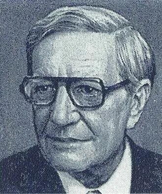
哈洛德·亚德利安·罗素·金·费尔比
（Harold Adrian Russell "Kim" Philby，1912-1988）
他是苏联冷战时期潜伏在英国的双重间谍，暗中替苏联内务人民委员部和KGB效力，提供情报。苏联情报单位给他的代号是Stanley，和其他四个潜伏在英国的苏联间谍并称为“剑桥五杰”，五人组人员还有唐纳德·麦克林（代号：Homer）、盖伊·伯吉斯（代号：Hicks）、安东尼·布伦特（代号：Johnson）和另一位身份仍未确认的英国人约翰·凯恩克洛斯。
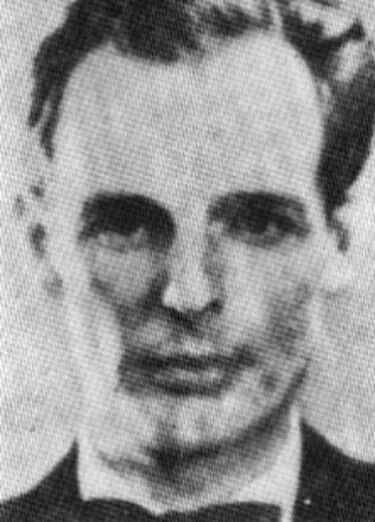
唐纳德·麦克莱恩
（Donald Maclean，1913-1983）
曾任英国外交官、英国驻美国大使馆办公室主任兼英美核武器项目协调员，苏联“剑桥五杰”之一的著名双重间谍。
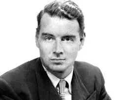
盖伊·伯吉斯
（Guy Burgess，1911-1963）
英国外交官和苏联特工、剑桥五杰成员，该小组从1930年代中期到冷战时代初期一直运作。1951年他与间谍唐纳德·麦克林一起叛逃到苏联，导致英美情报合作遭到严重破坏，造成英国外交部门的长期混乱并重挫其士气。
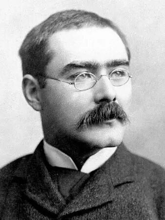
约瑟夫·鲁德亚德·吉卜林
（Joseph Rudyard Kipling，1865-1936）
吉卜林生于印度孟买，英国作家及诗人。主要著作有儿童故事《丛林奇谭》（The Jungle Book，1894年）、印度侦探小说《基姆》（Kim，1901年）、 诗集《营房谣》（Gunga Din，1892年）、短诗《If—》（If—，1895年）以及许多脍炙人口的短篇小说。他是英国19世纪至20世纪中一位很受欢迎的散文作家，被誉为“短篇小说艺术创新之人”，也被视为英国19世纪日不落国的帝国文学代表作家。
吉卜林的作品对20世纪初的世界文坛产生了很大的影响，其本人也在1907年获得了诺贝尔文学奖。他是英国第一位、也是迄今为止最年轻的诺贝尔文学奖获得者（42岁时获奖）。由于吉卜林生活的年代正值欧洲殖民国家向其他国家疯狂地扩张的时期，他的部分作品也被指责带有明显的帝国主义和种族主义色彩。长期以来人们对他的评价各持一端，极为矛盾，他笔下的文学形象往往既是忠心爱国和信守传统，又是野蛮和侵略的代表。
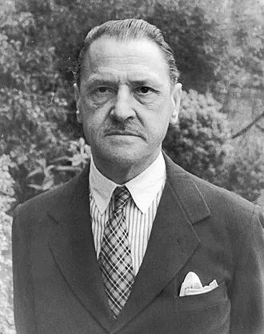
威廉·萨默塞特·毛姆
（William Somerset Maugham，1874-1965）
英国现代小说家、剧作家。他是那个时代最受欢迎的作家之一，据说是20世纪30年代收入最高的作家。毛姆的父母在他10岁之前就去世了，他被一个情感冷漠的叔叔领养。他不想像家里的其他人一样成为一名律师，所以他接受了医学培训，取得了医生资格。他的第一部小说《兰贝斯的丽莎》 (1897年)首期销售速度惊人，以至于他放弃了医学，转而全职写作。第一次世界大战期间，他曾在红十字会和救护队服役，1916年被招募加入英国秘密情报局，曾在瑞士和俄罗斯为其服务，直到1917年十月革命。战争期间和战后，他游历了印度和东南亚，这些经历被反映在其后来的短篇故事和小说中。
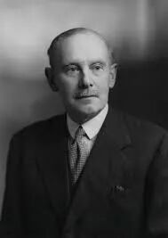
斯图尔特·格雷厄姆·孟席斯
（Sir Stewart Graham Menzies，1890-1968）
英国情报员，在第二次世界大战期间担任军情六处处长。孟席斯在第一次世界大战期间接触情报工作。1914年，他随英国远征军远赴法国与德军作战，在同年年末获得DSO勋衔。1915年，孟席斯又因功获得MC勋衔。同年受德军毒气攻击，受伤入院。孟席斯康复出院后，获上级任命成为情报人员。战争结束之时，孟席斯已是荣誉陆军少校。1919年，上级派他到MI1工作。孟席斯在第二次世界大战爆发之初，获任为秘密情报局局长。二战爆发之后，他展现出了非同寻常的耐力、韧性，令熟悉他的人为之震惊。1951年，孟席斯辞去情报局局长一职，开始退休生活。
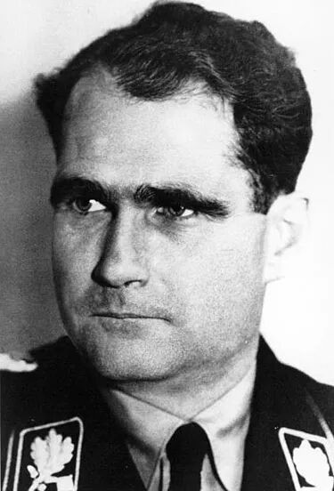
鲁道夫·瓦尔特·里夏德·赫斯
（Rudolf Walter Richard Heß，1894-1987）
纳粹党和纳粹德国的副元首，生于奥斯曼帝国埃及的亚历山大港。赫斯于1941年5月10日搭乘飞机前往英国进行未授权的和平任务，遭英方扣留直到大战结束。二战后判处终身监禁，最后于柏林施潘道战犯监狱内的小别墅上吊自杀。不过当时赫斯的脖子上有绳索多次缠绕过的迹象，勒痕呈平行状，因此有不少人认为赫斯的死并不单纯。
0 2组织
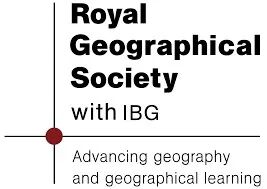
皇家地理学会（Royal Geographical Society with the Institute of British Geographers）是为促进地理学发展而于1830年在英国设立的一个学会。该学会在地理学占有重要位置。皇家地理学会支援地理学研究、教育及野外考察，也赞助过多位探险家。
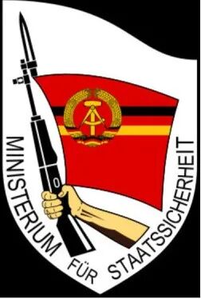
斯塔西（Stasi），前东德国家安全部，曾经是世界上比较强大的情报机构，其正式名称为国家安全部（Ministerium für Staatssicherheit），全称是“德意志民主共和国国家安全部”，成立于1950年2月8日，总部设在东柏林。斯塔西被认作当时世界上最有效率的情报和秘密警察机构之一。斯塔西成立宗旨是担任东德的政治警察，负责搜集情报、监听监视、反情报等业务。
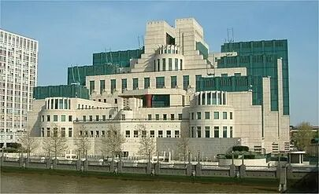
英国秘密情报局（Secret Intelligence Service，缩写：SIS），通称“军情六处”（英文：Military Intelligence, Section 6，缩写：MI6），是英国对外的情报机构，于1909年成立，负责在海外进行间谍工作。自1569年伊丽莎白一世时期英国国务大臣弗朗西斯·沃尔辛厄姆爵士创建“英国保密局”以来，曾几度变更其机构形式，直到1912年由曼斯菲尔德·卡明海军批准将其组建成现在的机构。
1930-1940年代，它被公认为世界上效能最高的情报机构。在纳粹德国侵略欧洲时，它在欧洲、南美洲以及亚洲的部分区域从事谍报任务（军情六处的名称就是在这个时期出现的，因为当时是“英国军事情报局第六处”）。当美国参加第二次世界大战时，军情六处曾帮助美国战略情报局（后改组为中央情报局）培训情报人员。从那时起，这两个机构之间开始了合作关系。也是在此时，军情六处成为与苏联秘密警察、中情局、摩萨德齐名的世界四大情报单位。从1950年代中期开始，关于苏联间谍自1930年代起渗透组织内部的丑闻败露，震惊民众。
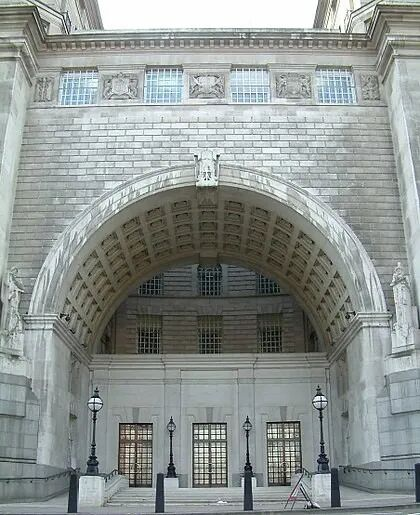
英国安全局（Security Service），别称“军情五处”（英语：Military Intelligence, Section 5，缩写：MI5），是英国的情报及国家安全机关。其在联合情报委员会（由英国内阁办公厅、内政大臣统辖）领导下运作，惟不隶属于英国内政部，负责打击严重罪案、军事分离主义、恐怖主义及间谍活动等，对外的国家安全事务则由军情六处负责。
0 3书籍
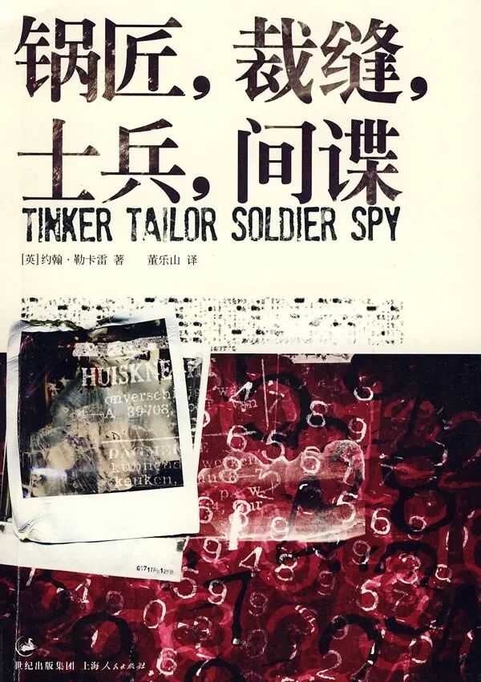
《锅匠、裁缝、士兵、间谍》
[英] 约翰·勒卡雷 著
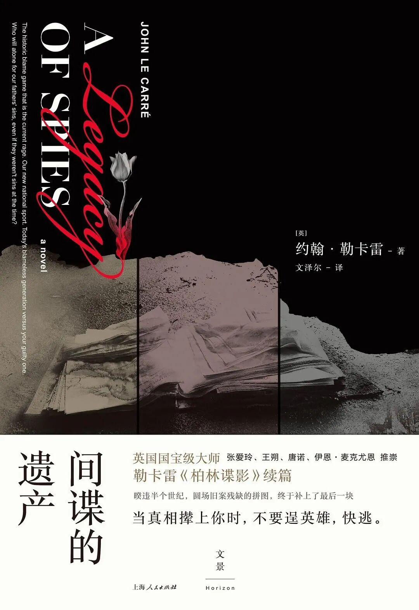
《间谍的遗产》
[英] 约翰·勒卡雷 著
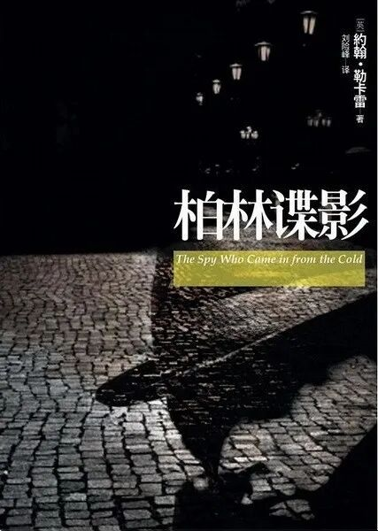
《柏林谍影》
[英] 约翰·勒卡雷 著
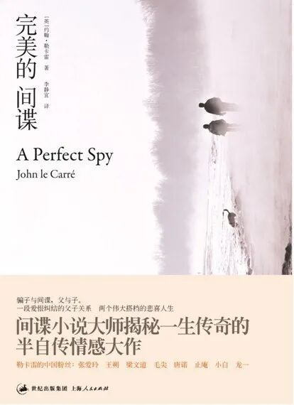
《完美的间谍》
[英] 约翰·勒卡雷 著
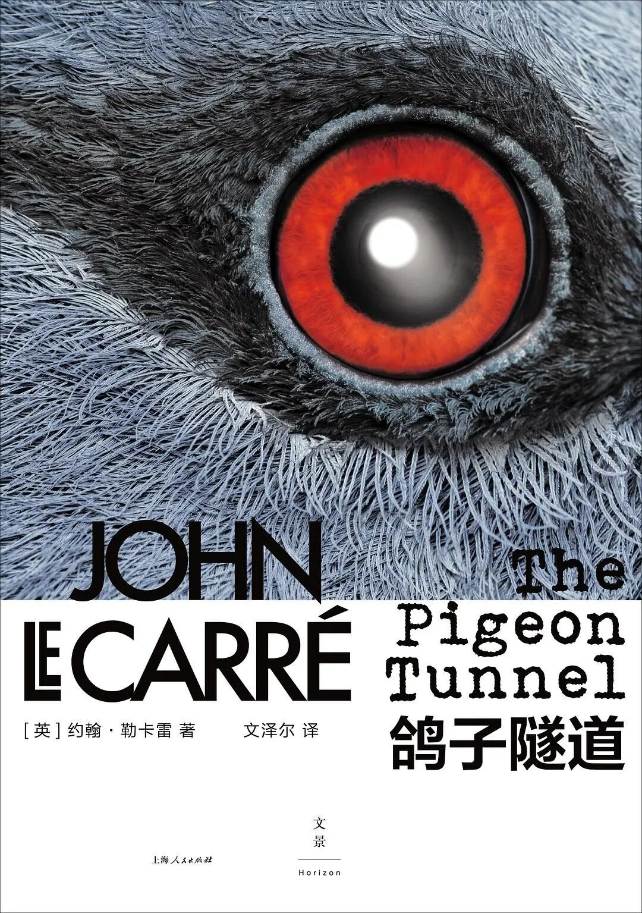
《鸽子隧道》
[英] 约翰·勒卡雷 著
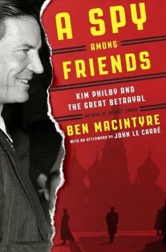
A Spy Among Friends
Ben Macintyre
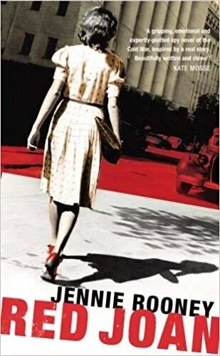
Red Joan
Jennie Rooney
0 4影视
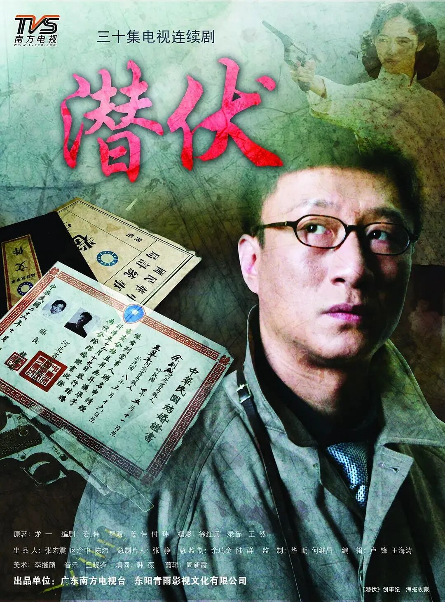
《潜伏》
《巨塔杀机（The Looming Tower）》
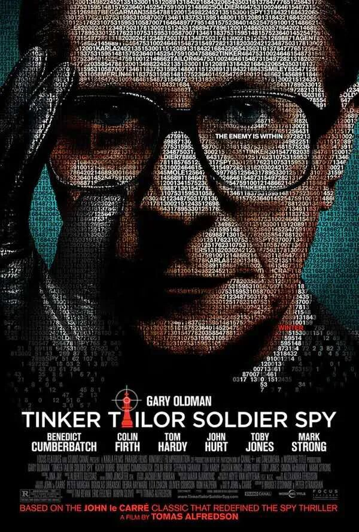
《锅匠，裁缝， 士兵，间谍（Tinker, Tailor, Soldier, Spy）》
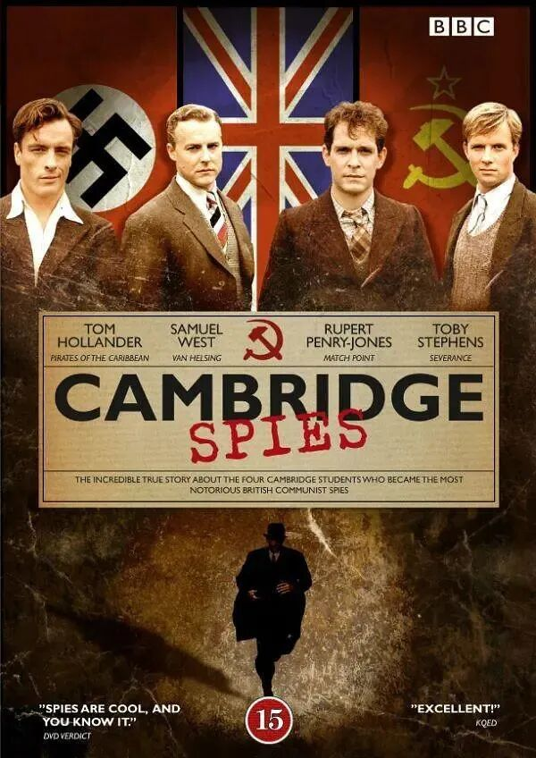
《剑桥风云（Cambridge Spies）》
排版/日尧
整理/车旭晨

苹果播客 | Spotify | 小宇宙App | 网易云音乐喜马拉雅 | 蜻蜓 FM | 荔枝 FM央广云听 | 芒果动听 | 阿基米德 | 三联中读搜索
『忽左忽右』
订阅收听
「忽左忽右」公众号
微信号：leftright2018
新浪微博：@忽左忽右leftright
contact@justpod.fm
在微信公众号后台发送【加群】获取群小助手二维码
扫码关注我们
帮我点个“在看”呗